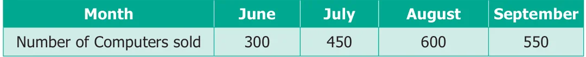
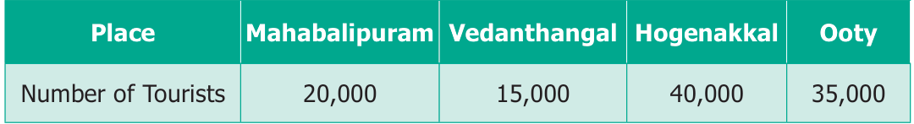
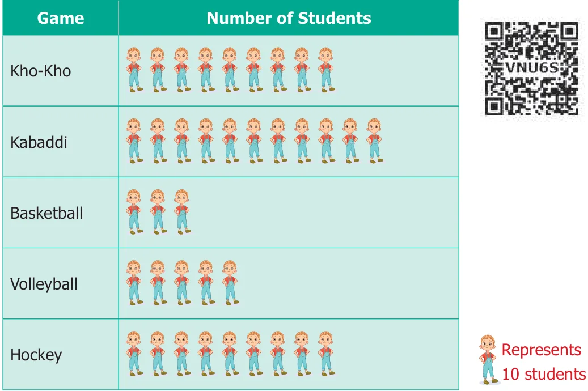

- 1.Fill in the blanks.
- (i)If represents 100 balls then represents __________ balls.
- (ii)If 200 is represented by then 600 is represented by __________.
- (iii)Representation of data by using pictures is known as __________.
- 2.Draw a pictograph for the given data.

(Choose your own suitable scale)
- 3.The following table shows the number of tourists who visited the places in the month
of May. Draw a pictograph.

(Choose your own suitable scale)
- 4.The following Pictograph shows the number of students playing different games in a school.

Answer the following questions.
- (i)Which is the most popular game among the students?
- (ii)Find the number of students playing Kabaddi.
- (iii)Which two games are played by equal number of students?
- (iv)What is the difference between the number of students playing Kho-Kho and
Hockey?
- (v)Which is the least popular game among the students?
Objective Type Questions
- 5.The representation of ‘one picture to many objects’ in a Pictograph is called _______.
- (a)Tally mark (b) Pictoword (c) Scaling (d) Frequency
- 6.A Pictograph is also known as __________.
- (a)Pictoword (b) Pictogram (c) Pictophrase (d) Pictograft